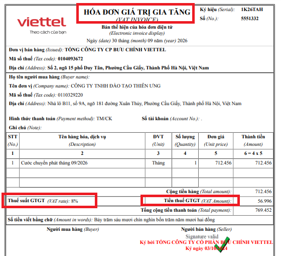
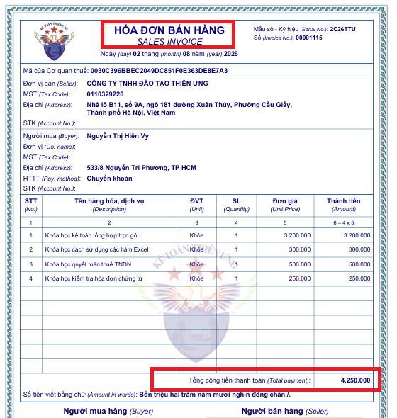
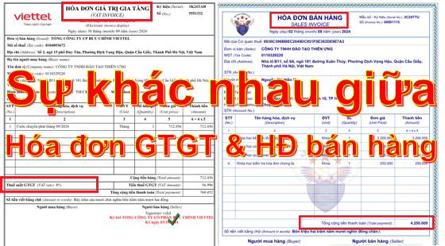

Sự khác nhau giữa Hóa đơn GTGT và hóa đơn bán hàng như nào? Cách phân biệt hóa đơn bán hàng và hóa đơn GTGT (VAT) – Cách kê khai thuế hóa đơn bán hàng và hóa đơn GTGT theo đúng quy định về hóa đơn mới nhất hiện hành.
Theo Điều 8 Nghị định 123/2020/NĐ-CP quy định về hóa đơn bán hàng hóa, cung ứng dịch vụ như sau:
“Điều 8: Loại hóa đơn:
1. Hóa đơn giá trị gia tăng là hóa đơn dành cho các tổ chức khai thuế giá trị gia tăng theo phương pháp khấu trừ sử dụng cho các hoạt động:
a) Bán hàng hóa, cung cấp dịch vụ trong nội địa;
b) Hoạt động vận tải quốc tế;
c) Xuất vào khu phi thuế quan và các trường hợp được coi như xuất khẩu;
d) Xuất khẩu hàng hóa, cung cấp dịch vụ ra nước ngoài.
2. Hóa đơn bán hàng là hóa đơn dành cho các tổ chức, cá nhân như sau:
a) Tổ chức, cá nhân khai, tính thuế giá trị gia tăng theo phương pháp trực tiếp sử dụng cho các hoạt động:
- Bán hàng hóa, cung cấp dịch vụ trong nội địa;
- Hoạt động vận tải quốc tế;
- Xuất vào khu phi thuế quan và các trường hợp được coi như xuất khẩu;
- Xuất khẩu hàng hóa, cung cấp dịch vụ ra nước ngoài.
b) Tổ chức, cá nhân trong khu phi thuế quan khi bán hàng hóa, cung cấp dịch vụ vào nội địa và khi bán hàng hóa, cung ứng dịch vụ giữa các tổ chức, cá nhân trong khu phi thuế quan với nhau, xuất khẩu hàng hóa, cung cấp dịch vụ ra nước ngoài, trên hóa đơn ghi rõ “Dành cho tổ chức, cá nhân trong khu phi thuế quan”."
KẾT LUẬN:
- Hóa đơn GTGT: Dùng cho những DN kê khai thuế GTGT theo pp khấu trừ.
- Hóa đơn bán hàng: Dùng cho những DN kê khai thuế GTGT theo pp trực triếp và tổ chức, cá nhân trong khu phi thuế quan.
Ngoài ra, căn cứ vào khoản 10 điều 01 của Nghị định 70/2025/NĐ-CP (Sửa đổi bổ sung khoản 2 Điều 13 của Nghị định 123/2020/NĐ-CP quy định về hóa đơn) =>>> hóa đơn bán hàng và hóa đơn giá trị gia tăng còn được sử dụng trong các trường hợp "Cấp hóa đơn điện tử có mã của cơ quan thuế theo từng lần phát sinh" như sau:
Điều 13. Áp dụng hóa đơn điện tử khi bán hàng hóa, cung cấp dịch vụ
2. Quy định về cấp và kê khai xác định nghĩa vụ thuế khi cơ quan thuế cấp hóa đơn điện tử có mã của cơ quan thuế theo từng lần phát sinh như sau:
Cấp hóa đơn điện tử có mã của cơ quan thuế theo từng lần phát sinh là hóa đơn bán hàng trong các trường hợp:
- Hộ kinh doanh, cá nhân kinh doanh theo quy định tại khoản 4 Điều 91 Luật Quản lý thuế số 38/2019/QH14 không đáp ứng điều kiện phải sử dụng hóa đơn điện tử có mã của cơ quan thuế nhưng cần có hóa đơn để giao cho khách hàng;
- Tổ chức không kinh doanh nhưng có phát sinh giao dịch bán hàng hóa, cung cấp dịch vụ;
- Doanh nghiệp sau khi đã giải thể, phá sản, đã chấm dứt hiệu lực mã số thuế có phát sinh thanh lý tài sản cần có hóa đơn để giao cho người mua;
- Doanh nghiệp, tổ chức kinh tế, hộ kinh doanh, cá nhân kinh doanh thuộc diện nộp thuế giá trị gia tăng theo phương pháp trực tiếp thuộc các trường hợp sau:
+ Ngừng hoạt động kinh doanh nhưng chưa hoàn thành thủ tục chấm dứt hiệu lực mã số thuế có phát sinh thanh lý tài sản, hàng hóa cần có hóa đơn để giao cho người mua;
+ Tạm ngừng hoạt động kinh doanh cần có hóa đơn giao cho khách hàng để thực hiện các hợp đồng đã ký trước ngày cơ quan thuế thông báo tạm ngừng kinh doanh;
+ Bị cơ quan thuế cưỡng chế bằng biện pháp ngừng sử dụng hóa đơn;
+ Doanh nghiệp đang làm thủ tục phá sản nhưng vẫn có hoạt động kinh doanh dưới sự giám sát của Tòa án;
+ Doanh nghiệp, tổ chức kinh tế, tổ chức khác, hộ kinh doanh, cá nhân kinh doanh trong thời gian giải trình hoặc bổ sung tài liệu quy định tại điểm d khoản 2 Điều 16 Nghị định này;"
Cấp hóa đơn điện tử có mã của cơ quan thuế theo từng lần phát sinh là hóa đơn giá trị gia tăng trong các trường hợp:
- Doanh nghiệp, tổ chức kinh tế, tổ chức khác thuộc diện nộp thuế giá trị gia tăng theo phương pháp khấu trừ thuộc các trường hợp sau:
+ Ngừng hoạt động kinh doanh nhưng chưa hoàn thành thủ tục chấm dứt hiệu lực mã số thuế có phát sinh thanh lý tài sản, hàng hóa cần có hóa đơn để giao cho người mua;
+ Tạm ngừng hoạt động kinh doanh cần có hóa đơn giao cho khách hàng để thực hiện các hợp đồng đã ký trước ngày cơ quan nhà nước có thẩm quyền thông báo tạm ngừng kinh doanh;
+ Bị cơ quan thuế cưỡng chế bằng biện pháp ngừng sử dụng hóa đơn;
+ Doanh nghiệp đang làm thủ tục phá sản nhưng vẫn có hoạt động kinh doanh dưới sự giám sát của Tòa án;
+ Doanh nghiệp, tổ chức kinh tế, tổ chức khác trong thời gian giải trình hoặc bổ sung tài liệu quy định tại điểm d khoản 2 Điều 16 Nghị định này.
- Tổ chức, cơ quan nhà nước không thuộc đối tượng nộp thuế giá trị gia tăng theo phương pháp khấu trừ có bán đấu giá tài sản (trừ trường hợp bán tài sản công nêu tại khoản 3 Điều 8 Nghị định này), trường hợp giá trúng đấu giá là giá bán đã có thuế giá trị gia tăng được công bố rõ trong hồ sơ bán đấu giá do cơ quan có thẩm quyền phê duyệt thì được cấp hóa đơn giá trị gia tăng để giao cho người mua.
=>>> Tham khảo thêm:
Căn cứ vào điểm a khoản 10 điều 01 của Nghị định 70/2025/NĐ-CP (Sửa đổi bổ sung điểm b khoản 2 Điều 13 của Nghị định 123/2020/NĐ-CP quy định về hóa đơn)
Doanh nghiệp, tổ chức kinh tế, tổ chức khác, hộ kinh doanh, cá nhân kinh doanh thuộc trường hợp được cấp hóa đơn điện tử có mã của cơ quan thuế theo từng lần phát sinh gửi đơn đề nghị cấp hóa đơn điện tử có mã của cơ quan thuế theo Mẫu số 06/ĐN-PSĐT Phụ lục IA ban hành kèm theo Nghị định 70/2025/NĐ-CP này đến cơ quan thuế và truy cập vào Cổng thông tin điện tử của Tổng cục Thuế để lập hóa đơn điện tử.
Doanh nghiệp, tổ chức kinh tế, tổ chức khác, hộ kinh doanh, cá nhân kinh doanh khai hồ sơ khai thuế theo quy định pháp luật về quản lý thuế.
- Người nộp thuế thuộc trường hợp được cấp hóa đơn bán hàng theo từng lần phát sinh tại điểm a.1 khoản 2 Điều này thì phải nộp đầy đủ số thuế phát sinh trên hóa đơn đề nghị cấp theo quy định của pháp luật thuế giá trị gia tăng, thu nhập cá nhân, thu nhập doanh nghiệp hoặc số phát sinh phải nộp theo pháp luật quản lý thuế và các loại thuế, phí khác (nếu có).
- Người nộp thuế thuộc trường hợp được cấp hóa đơn giá trị gia tăng theo từng lần phát sinh tại điểm a.2 khoản 2 Điều này thì phải nộp số thuế giá trị gia tăng trên hóa đơn giá trị gia tăng theo từng lần phát sinh hoặc số phát sinh phải nộp theo pháp luật quản lý thuế.
=>>> Sau khi doanh nghiệp, tổ chức kinh tế, tổ chức khác, hộ kinh doanh, cá nhân kinh doanh đã nộp đủ thuế hoặc số phát sinh phải nộp ngay trong ngày làm việc hoặc chậm nhất là ngày làm việc tiếp theo, cơ quan thuế cấp mã của cơ quan thuế trên hóa đơn điện tử.
Doanh nghiệp, tổ chức kinh tế, tổ chức khác, hộ kinh doanh, cá nhân kinh doanh tự chịu trách nhiệm về tính chính xác của các thông tin trên hóa đơn điện tử theo từng lần phát sinh được cơ quan thuế cấp mã. Trường hợp hóa đơn điện tử theo từng lần phát sinh cần phải lập hóa đơn điều chỉnh hoặc thay thế, doanh nghiệp, tổ chức kinh tế, tổ chức khác, hộ kinh doanh, cá nhân kinh doanh gửi đơn đề nghị cấp hóa đơn điện tử có mã của cơ quan thuế theo Mẫu số 06/ĐN-PSĐT Phụ lục IA ban hành kèm theo Nghị định này đến cơ quan thuế để được cấp hóa đơn điện tử điều chỉnh hoặc thay thế cho hóa đơn đã lập. Việc lập hóa đơn điều chỉnh hoặc thay thế thực hiện theo quy định tại Điều 19 Nghị định này và việc nộp thuế, các khoản thu khác thuộc ngân sách nhà nước tính trên doanh thu chênh lệch tăng trên hóa đơn thực hiện theo quy định của pháp luật quản lý thuế.
---------------------------------------------------------------------------
Cách phân biệt hóa đơn GTGT và hóa đơn bán hàng:
| Hóa đơn GTGT |
|
- Tên hóa đơn: Hóa đơn giá trị gia tăng - Trên hóa đơn Có dòng thuế suất, tiền thuế |
|
 |
| Hóa đơn bán hàng |
|
- Tên hóa đơn: Hóa đơn bán hàng - Trên hóa đơn Không có dòng thuế suất, tiền thuế |
|
 |
Quy định về Thuế TNDN:
- Hóa đơn GTGT hay Hóa đơn bán hàng nếu hợp lý, hợp lệ, hợp pháp thì đều được ghi nhận vào chi phí khi tính thuế TNDN.
Quy định về Thuế GTGT:
1. Đối với DN kê khai thuế GTGT theo pp khấu trừ:
a. Nếu DN bạn kê khai theo pp khấu trừ mà có hóa đơn đầu vào là hóa đơn GTGT (đủ điều kiện khấu trừ) thì được khấu trừ và kê khai vào Chỉ tiêu 25 trên Tờ khai 01/GTGT
b. Nếu DN bạn kê khai theo pp khấu trừ mà có hóa đơn đầu vào là hóa đơn bán hàng thì không được khấu trừ nên các bạn chỉ cần kê khai vào Chỉ tiêu 23 trên Tờ khai 01/GTGT. (Hoặc ko cần kê khai vì không có thuế GTGT)
2. Đối với DN kê khai thuế GTGT theo pp trực tiếp:
- Nếu DN bạn kê khai theo pp trực tiếp mà có hóa đơn đầu vào là hóa đơn GTGT thì không cần kê khai hóa đơn đầu vào, các bạn hạch toán phần thuế GTGT đó vào nguyên giá của hàng hóa, tài sản, chi phí.
VD: DN bạn mua 1 máy tính về cho bộ phận văn phòng sử dụng: Trị giá 10tr, tiền thuế là 1tr, tổng phải trả là 11tr. (Đây là hóa đơn GTGT nhưng DN kê khai theo pp trực tiếp)
Chỉ cần hạch toán: (Không được kê khai đầu vào)
Nợ TK 153...: 11tr
Có 111: 11tr
- Nếu DN bạn kê khai theo pp trực tiếp mà có hóa đơn đầu vào là hóa đơn bán hàng thì không cần phải kê khai, chỉ hạch toán thôi.
=> Những DN kê khai thuế theo pp trực tiếp chỉ phải kê khai những hóa đơn bán hàng đầu ra (Đầu vào không được kê khai)
Kế toán Diệu Tâm xin chúc các bạn thành công!
---------------------------------------------------- 